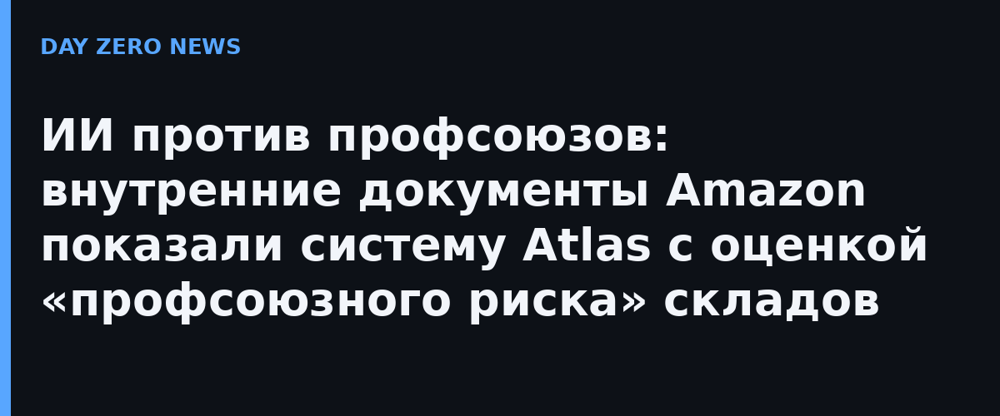

Согласно документам, опубликованным в судебном споре Amazon с канадским профсоюзом, ИИ-инструмент Atlas собирает «сотни точек данных»: публикации сотрудников на Reddit-форумах, ответы на внутренние опросы, сведения о прежних трудовых конфликтах и общая обстановка на площадке. На выходе каждый склад получает риск-оценку от 100 до 900 баллов и попадает в одну из пяти категорий — от «незамедлительного риска не наблюдается» до «активность неизбежна». Чем ниже балл, тем выше вероятность, что рабочие начнут объединяться в профсоюз или устроят сидячую забастовку; для руководства «лучше» те площадки, где балл выше. В материалы для менеджеров входит и рекомендация использовать эти оценки «при решениях о персонале, планировании ресурсов и типовых действиях по снижению рисков для трудовой структуры Amazon».
В наивысшую первую категорию, по документам, попали 16 складов Amazon в США, Канаде и Великобритании, причём два — британские: роботизированный фулфилмент-центр EMA4 в Sutton Coldfield под Бирмингемом стоимостью 500 млн фунтов и склад BHX4 в Ковентри, где работает профсоюзный активист Гарфилд Хилтон. Следили, по сведениям openDemocracy, не только за внутренними досками объявлений, но и за постами сотрудников в соцсетях. Профсоюз GMB, год назад проигравший голосование о признании в Ковентри с разрывом всего в 28 голосов, теперь требует правительственного расследования, а юристы лондонской фирмы Leigh Day отмечают: документы рассказывают «совсем другую историю» по сравнению с прежними заверениями Amazon о нейтралитете.
Отдельного официального анонса у Amazon нет: речь идёт об утечке внутренних материалов через судебный процесс, и единственная официальная позиция компании — комментарий её представителя журналистам. В Amazon отвергли трактовку Atlas как «наблюдения за отдельными сотрудниками», заявив, что речь идёт об активности «на уровне здания», что компания «не отслеживает мнения, профсоюзную принадлежность или персональные данные», а инструмент нужен, чтобы «понимать, где сотрудникам нужна поддержка».
ИИ-модели всё чаще выходят из лабораторий в кадровые решения — и это прямой кейс пересечения искусственного интеллекта, приватности и предиктивной аналитики: система, обученная предсказывать «недовольство», фактически решает заранее, где людям будет труднее защищать свои права. Отдельно примечательна сама механика утечки: общественность узнала о внутренней ИИ-системе крупнейшей компании мира не благодаря регулятору, а случайно — через судебную тяжбу по другому делу.